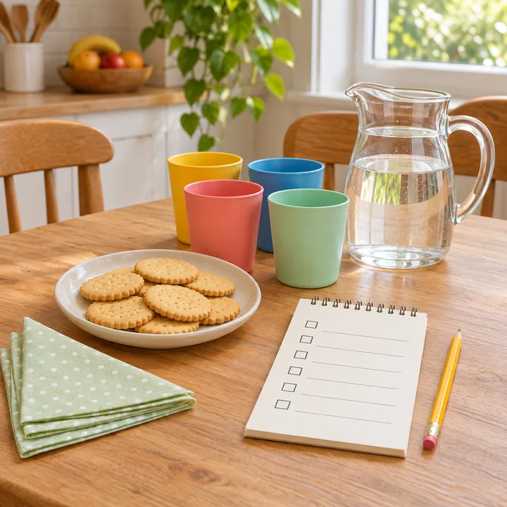

Como organizar um lanche da tarde com os amigos das crianças
Conte os convidados, pergunte às famílias sobre restrições alimentares e confira o que tem em casa antes de comprar.

Comece pelos convidados e depois escolha o lanche
Veja quantas crianças vêm e pergunte diretamente às famílias se há alergias ou outras necessidades alimentares. Depois decida o que servir e confira o que já tem em casa. Olhe a embalagem se precisar verificar os ingredientes.
Coloque na lista só o que falta
Se já tem biscoitos e guardanapos, deixe os dois fora da lista. Confira também os copos e as bebidas. No EatMeFirst, alimentos, guardanapos e copos podem ficar na mesma lista. O inventário, a lista e o salvamento automático são grátis no navegador, sem instalar nada nem fazer cadastro.